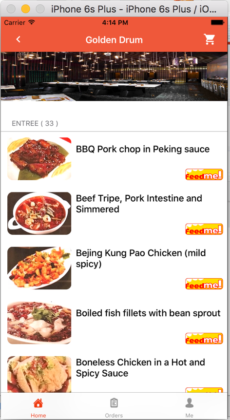
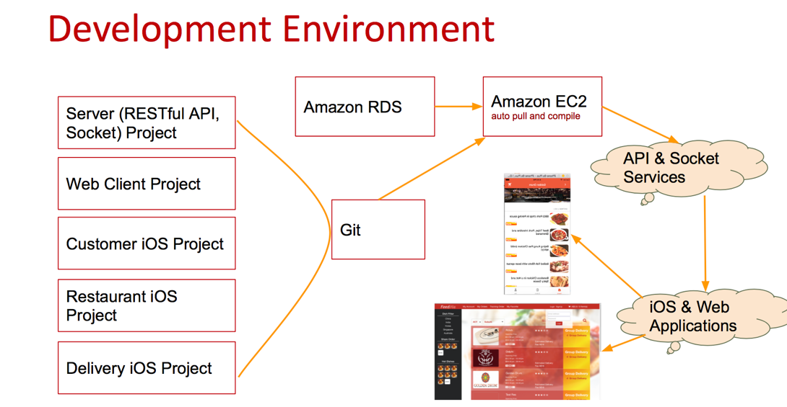
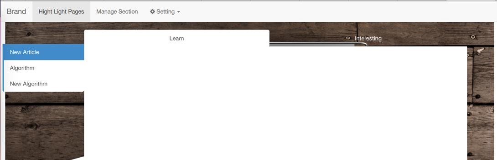

“
”This article displays projects developed recently.
| Date | Name | Type | Techniques used |
|---|---|---|---|
| Working on | FeedMe | Group Project -> Personal Project | Java(Springboot), Angular, Bootstrap, JQuery, AJAX, Web Socket, Java Socket, Swift, MySQL, Amazon AWS |
| Working on | My Shift | Personal Project | Node.js, Angular, Bootstrap, JQuery, AJAX, MySQL |
| Jan 2017 | UI design to web | Freelancer | HTML5, CSS |
| Nov 2016 | Back-end API implement with PHP | Freelancer | PHP |
| Nov 2016 | Picture Gallery | Freelancer | JQuery, Flask, JS, AJAX, Bootstrap, HTML5, CSS |
| Oct 2016 | Spring Roll | Freelancer | Bootstrap, HTML5, CSS |
| Sep 2016 | Patients Visit (Single Page App) | Code Challenge | JQuery, Bootstrap, LESS, JS, HTML5, CSS |
| May 2016 | Photo Post Cards | Freelancer | Bootstrap, HTML5, CSS |
“
”A Personal Statement. Please contact with email jevy.wangfei@gmail.com .
I am Fei Wang, a graduate Master of Computer Science student majoring in Computing in Australia National University (ANU).
During last year, I have designed and implemented several projects which used skills such as Java, Angular, jQuery, AJAX, Bootstrap, HTML5, CSS3, and LESS etc. You may access their live demo by clicking pictures displayed as below.

In order to keep technology competitiveness, I am learning and keep tracking the following technics.
- Data processing: Spark, Cassandra, MongoDB, Hadoop.
- Web development: Angular, Spring boot, Python, Bootstrap, JQuery, Nodejs(Express), Meteor, flask.
- Program language: Java, Python (in science and AI subjects), JavaScript, Scala,
- Develop, test, deploy environment and tools: Docker, Linux/Unix (Ubuntu, Suse, Mac), Amazon EC2, git, maven.
Prior study at the Australian National University, I had worked as systems engineer for nearly three years. From this experience, I had learned how to work on UNIX & Linux system, how to manage database and how to configure network things.
You will find me to be a pro-active, conscientious and self-motivated person who is keen to do the things to the best of my ability. Given the opportunity, I would apply myself with enthusiasm to all tasks, ensuing that I get the job done accurately and efficiently.
Most of my works are hosted on Github: https://github.com/jevy-wangfei.
You also can follow this link to view My CV
“
”Patient Visit is a single page based app. Only JavaScript, Bootstrap, and HTML are used to built this app.
Web UI of Patient Visit

“
”Picture Gallery is single page based a online picture sharing and comment application (DEMO). Only JavaScript, Bootstrap and Flask are used.
Web UI of Picture Fallery
“
”Spring roll is a online recipes and offline food cook practicing web site. Technics such as JavaScript, RESTful API, Bootstrap, HTML etc. are used.
Web UI of Spring roll
“
”FeedMe is an online food booking and delivery system. Technics such as Java, swift (IOS), JavaScript, Socket, RESTful API, Bootstrap, JS and HTML etc. are used.
FeedMe Web UI is hosting on Amazon EC2
Web UI of FeedMe

Web UI of FeedMe

iOS UI of FeedMe

iOS UI of FeedMe

Backend Implement

“
”Hight Light Notebook allows you marking, editing and saving your modification on an online notebook.
Editing Web Page

Online notebook

“
”A detailed resume linkage.
Please following the link Fei Wang’s detailed CV to view my Resume.
“
”The Telecom Business Data Process aims to analysis large scale telecom data in easy way.
Telecom Business Intelligence
Objective
Telecom company manages millions subscribers and the subscribers generate billions calling and surfing internet records. With the increase of records, finding useful information becomes a challenge.
This project will go to find/lean new pattern from the large volume of data by applying Machine Leaning technology.
Targets include:
- Subscriber fraud detection
- Valuable subscribers finding
- Telecom Services using trend analysis
- Business decision data preparing
Why Focus on Telecom business data
- Telecom data volume is not small and not very big. The data volume of telecom is roughly TB per month. Perform any query to the records will very compute resource consuming. Analysis staffs can not execute SQL to find useful information. Big data tools (such as Hadoop) are too general and complex for telecom companies to apply them into activating business operation.
- Telecom generates stream data Different with large scale batch data processing technology, telecom data is stream data and continuing lean technology is required.
- This project will go to explore new methods to process TB/month volume stream data using distributed data processing tools.
- This project will focus on new pattern finding in easy to use way for telecom companies. The vision is that normal office staffs can view and operate the intelligent data learning system without additional training of large scale data analysis.
Problems in Telecom Data
- Data volume is TB per month.
- Data analysis is needed every day.
- General data analysis tools are not specifically developed for telecom data analysis. Such that they require experienced staff in telecom data analysis.
- Lack of Data Analysis Expertise in telecom company.
- General data analysis tools either processing TB data per day or GB data per month. They are not suitable for medium scale data process.
- Telecom data analysis requires online and ongoing update analysis, since the subscribers generate data on time and these data are related from past to future.
- Technology invests limitation to develop a new Data analysis tool.
Solution for Telecom Data
Three layer artecher: Leaning engine, Leaning system management & accessing application and User Interface (Explorer, Taplet, iOS, Android) - Learning Engine Features (Spark + Hadoop) - Distributed computing network based - Steam data leaning support - Ongoing update leaning model - Learn status and result stores in NoSQL database - Telecom Customized learning models - Fraud Detection - Individual subscriber’s habit leaning - Over view of service trends for groups - other models which can be extended
Technique for learning engine
Our solution is to use Hadoop as distributed computing framework, use Spark and its machine learning library as leaning learning engine, which runs on Hadoop. - System Management & Accessing Features(JavaEE + Jersey + Tomcat8) - An united Management middleware will be designed to manage - creating new leaning task - checking on going leaning task - querying finished leaning task and returning leaning results - RESTful API will be well designed to make system friendly to kinds of user devices.
Technique for web application
Using tomcat as web application server, using javaEE and Jersey to program RESTful TelecomBI management and accessing application. - User Interface Features (JS (Jquery) + HTML&CSS + Bootstrap) - Using RESTful style accessing API to create user interface on multi-devices such as explorer, iOS, Android.
Technique for client
Using HTML&CSS + Bootstrap to create user interface, Using JS accompanied with JQuery to query data from RESTful API server.
Project Management
- Development Stages
- Requirements survey and research
- Project planning
- System design
- Develop and test loop:
- System Implementation
- System Testing
- System Integration and Test
- Publish System
Technology Required
| Technology | Purpose |
|---|---|
| Java Programming | Implement TelecomBI Server. </br> Implement Learning Engine |
| Scala Programming | Implement Learning Engine |
| Jersey | Implement Java RESTful web application |
| Java EE | Implement Java web application |
| Tomcat | Launch Jave Web Application |
| Hadoop | Implement Distributed computing framework |
| Spark | Implement Stream Data processing |
| Machine Leaning | Implement TelecomBI core learning Engin Algorithms |
| HTML&CSS | Implement user interface |
| Bootstrap | Improve user interface and simplify UI development |
| JS (JQuery) | Implement data query from web servers by RESTful API |
| Maven | Help to manage Java projects (Three projects) |
| Github | Help to manage code and team development |
Required open soursce project
| Project | version |
|---|---|
| Spark | 1.4 |
| Hadoop | 2.6 |
| Jersey | 2.19 |
| Tomcat | 8.0 |
| Java | 8.0 |
| Scala | 2.11.7 |
| Bootstrap | 3.3.5 |
| JQuery | 2.1.4 |
| HTML&CSS | 5 |
| Maven | 3.3.3 |
| Eclipse | 4.5 |
“
”This software named as Scheduler is designed for these shop owner to manage their staffs and shop.
Schedule
Objective
In customer service industry, a lot of staffs work in kinds of shop. Because these shop are small, there are little specific business management software avaliabe for the owner of shop to manage their staffs and shop. </br> The boss who runs several small shop may employee three to twenty employees who will work as part-time, and all of management such as arrange work schedule, salary, business income and outcome manually by notebook. </br> This software named as Scheduler is designed for these shop owner to manage their staffs and shop.
Requires
- Current Situations
- Full time master staff, Full time new staff, Part time master staff, Part time new staff (with different salary)
| Full Time | Part Time | |
|---|---|---|
| Master | A$18/h | A$16/h |
| New | A$14/h | A$12/h |
Table 1 (The salary can be configed with the degree and type of staff) - Busy, Normal, Relax hours(with different staffs cooperate together) - Busy, Normal, Relax day(with different staffs cooperate together)
| Busy(day) | Normal(day) | Relax(day) | |
|---|---|---|---|
| Busy(hour) | 4 | 3 | 3 |
| Normal(hour) | 3 | 2 | 2 |
| Relax(hour) | 2 | 2 | 1 |
Table 2 (The number of stuffs shoule can be configed) - Full time staff work time is more flexable - Full time staff have to work more than specific hours per week, such as 40 hours. - Part time staff can only work on specific day and duration, and they will inform boss when they are available. - Part time staff can less than theire abailable time. - One or more master staff(s) is(are) needed in main work hours to prepaire the services. - New staff(s) can work along without accompany of master staff at specific time (such as at the end hour of a work day). - There are will be different number of staffs in shop in the Busy, Normal, Relex hours of a day (the day may be Busy, Normal Relex along Monday to Sunday). It’s a matrix. Referencing Table 2. - Working duration may be different along the day from Monday to Sunday. Such as the shop will open longer at Friday. Work duration should can be editable. - In practic, staff will work longger than plan.
Soluction
- Using CSP technology in AI to solove the complex schedule problems.
“
”I begin my study at ANU. ANU is a great university.

“
”I get marriage today (Feb. 10, 2014). A new life style is starting.
I was enrolled by ANU at the 30th of Junary 2014. It's the Spring Day of China. Happy Spring Day. Happy ending of 2013. Good start of 2014.
“
”The Power FTP is a tool which is used to put files to distributed system which would have hundreds or thousand servers.
Matrix Entry (Old name PowerFTP)
I create a project named PowerFTP on github. Everyone can join me if you like this project.
What does the project do? The project intends to create a tool to operate distributed servers or large-scals computers.
Why create this project? I was troubled by operating many servers (Linux) when working as an engineer. To comfortable myself, I program a tool to operate these manchines in a simple way. That is distribute the commands which excuted on the master computer to many slave servers. At beginning, I create a project named “PowerFTP” to uploadand delete file based on the command distribution. Later, I modify the name to be Matrix Entry which will include the functions like FTP, SFTP, SSH, TELNET.
What are the advantages about Matrix Entry? 1. You can operate the whole nodes of computer network just by operating on one machine. 2. Executing command “./matrix” under the Matrix Entry directory, you can enjoy the convenience of computer network operation. 3. Easy to use. All of the commands in the MAtrix Entry are the same with FTP, SFTP, SSH, TELNET.
“
”Could the aged can operation the iPhone? Could we follow the way of thinking of the aged and children to design products?
I planed to buy a old style cell phone for my grandpa, but finally I buy a smart phone (based on Android) because it is so cheap that I can't reject it.
But I am in problems after giving the phone to my grandpa. He even don't know how to slide and touch the screan.
After showing him about the how to dial a number and recept a phone severial times, he gradually understands how to let the phone work. However, he can't operate the phone smoothly and can't handle the applications besides the basic function of the phone -- calling.
On other sides, this phennomenon of the aged contacting the smart phone (based on Anfroid) at the first times is the same with children, even they could play with the smartphone after touch the screan serverial times. They don't know how to operation the smart phone by sliding and touching at first. They have no idear about the exceptions which always happend on Android system based smartphone.
But there is an exception. Children can operation the iPhone smoothly because they know to press the big "HOME" button to go back the home page. Could the aged can operation the iPhone smoothly?
My sweet came to my home, the kids (my nephew and her neice) try to kiss her. Sweet.

This is the first post on this new blog. I will update all of the messages about me here.
Besides, I also displayed my design and picture in this blog. I am very interested in computer technology very much, and I hope to post the laterest information here.
Also, I am an amateur photographer. I will display the most beautiful pictures here.
Welcome to my blog, you can contact me Here, Or send a message to me by email